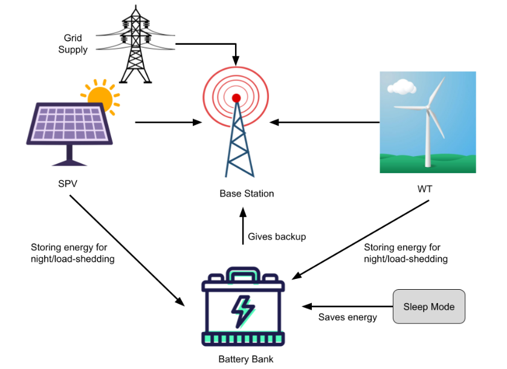

Renewable Energy for Base Stations
- Utilizing renewable energy is an efficient approach for creating eco-friendly systems.
- Various renewable energy processes include solar systems, biomass energy, and wind power.
- Solar panels harness energy from sunlight, while wind turbines utilize wind power, and biomass systems convert waste into energy.
- Our strategy involves a hybrid system of solar panels and wind power for generating electricity at base stations.
- Sufficient solar panels and wind turbines ensure ample electricity production for base stations.
- Solar panels store excess energy in battery banks for use during nighttime or grid disconnection, while wind power remains available day and night.
- Excess energy generated during base station sleep mode can also be stored for future use.
- We opt to avoid diesel generators due to high carbon emissions and cost, aiming to minimize environmental impact.
- Diesel generators consume 0.44 liters per kWh and emit 2.68 kg of carbon dioxide per liter.
- By using renewable energy, we strive to ensure reliable power supply while reducing environmental harm.
